地政学
スバは南太平洋の島国首都で、港、官庁、外交団、地域機関が近接します。小さな国土ながら、気候変動、海洋管理、開発援助、軍事協力、地域政治を扱う太平洋外交の実務拠点です。湾岸に世界が集う街でもある今。
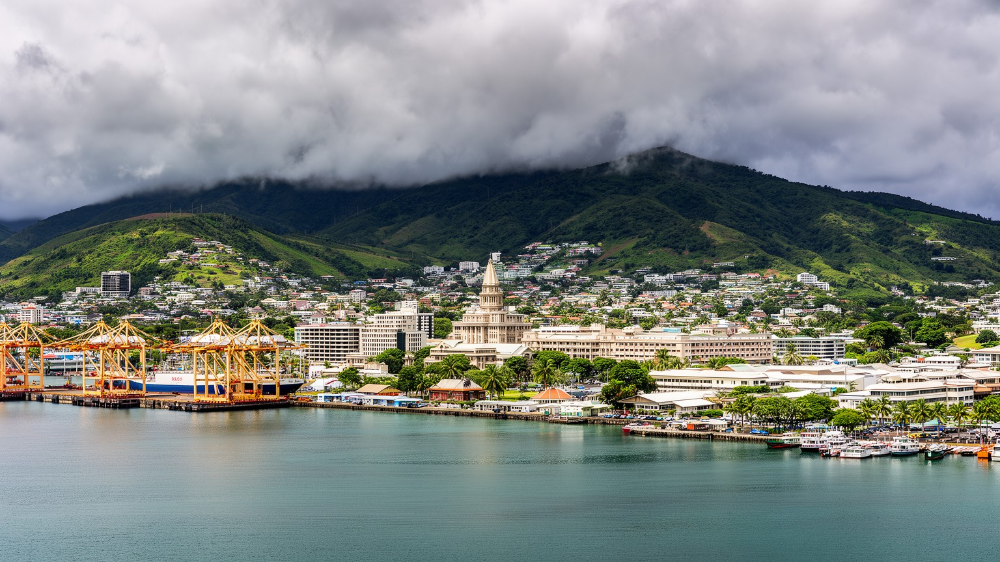
🇫🇯 フィジー / ビティレブ島 / World City Atlas
ビティレブ島南東岸の湾に開くフィジーの首都。港、官庁、大学、地域機関、インド系と先住系の文化、教会、寺院、市場、雨の多い丘陵の住宅地が重なる南太平洋の行政・商業都市です。
都市の骨格
スバはフィジーの政治中心であるだけでなく、南太平洋の大学、外交、地域機関、港湾商業が集まる都市です。湾岸の湿地、丘の住宅地、植民地期の街路、市場、教会、寺院が、島国の首都らしい密度を作ります。
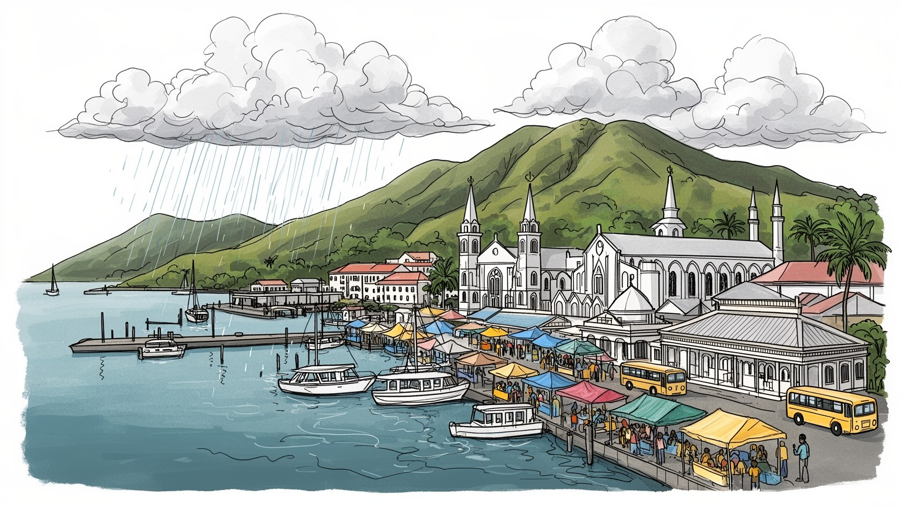
スバは南太平洋の島国首都で、港、官庁、外交団、地域機関が近接します。小さな国土ながら、気候変動、海洋管理、開発援助、軍事協力、地域政治を扱う太平洋外交の実務拠点です。湾岸に世界が集う街でもある今。
行政、港湾、金融、教育、小売、建設、観光、地域機関が雇用を作ります。フィジー経済は観光と送金に支えられますが、首都の日々は市場、港、学校、病院、事務、交通の仕事で回ります。賃金差も見える街です。課題。
先住系フィジー人、インド系、ロツマ系、中国系、欧州系、太平洋諸島出身者が混じり、教会、寺院、モスク、言語、食が重なります。ラグビー、合唱、祭礼、市場の香りが、多民族首都の生活文化を形作る街の日々。
旅行者はフィジー博物館、スバ市場、サーストン庭園、港、近郊の森へ向かいます。住民は雨、家賃、渋滞、海面上昇、廃棄物、学校、通勤と向き合います。観光地の南国像だけでは読めない首都です。日常も濃い街。
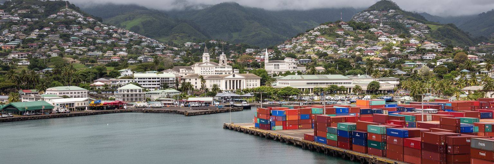
スバの都市としての性格は、ビティレブ島南東岸の湾に面していることから始まる。天然の港は植民地期から行政と商業を引き寄せ、現在もコンテナ、フェリー、沿岸航路、漁業、クルーズ、燃料、建材、日用品の動きを支えている。港の背後には官庁街、商店街、バスターミナル、市場、学校、丘陵住宅地が近い距離で重なり、海と山に挟まれた小さな首都の密度が生まれる。南東貿易風を受けるスバは雨が多く、湿った空気と雲が街の色を変える。海沿いの低地は物流に便利だが、高潮、排水、埋立地の沈下、海面上昇への備えも必要になる。港を眺めるだけでは、スバの役割は見えにくい。船の到着、倉庫、税関、バスに乗る通勤者、市場へ運ばれる野菜、丘へ上がる住宅街の坂道をつなげて初めて、湾が都市の入口であり生活の回路でもあることが分かる。海は観光の背景ではなく、国家の輸入、離島との接続、災害時の補給、地域外交の動線を担う実務の場である。雨で道路が詰まり、港の荷が遅れれば、店先の価格や離島への出荷にも響く。小さな湾岸都市であるスバでは、港の効率、排水、歩行者空間、公共交通が互いに分かちがたく結びついている。水辺をどう使うかは景観整備ではなく、気候時代の首都運営そのものだ。その積み重ねが、港町を単なる物流施設ではなく首都の生活基盤にしている要だ。
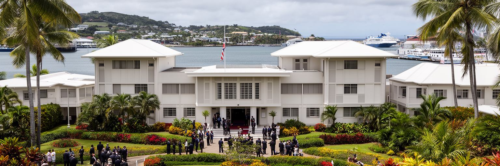
スバはフィジーの首都であると同時に、南太平洋の地域政治が集まる都市でもある。政府機関、外交団、国際機関、地域組織、開発援助の事務所、大学、研究機関が市内と周辺に置かれ、気候変動、海洋資源、漁業、移民、災害対応、安全保障、保健、教育をめぐる会議と調整が行われる。太平洋の島国は人口や面積では小さく見えても、広大な排他的経済水域、海上交通、気候リスク、地政学的競争の中で大きな意味を持つ。スバでは、その大きな課題がホテルの会議室、官庁の廊下、大学の講義室、港の岸壁、NGOの事務所に具体化する。外交は首脳会談だけではなく、通訳、運転手、事務職、研究者、学生、コミュニティ団体、メディアの仕事でも支えられる。フィジー国内の政治が揺れる時も、スバは地域の交渉窓口として見られ続ける。太平洋外交の都市としての重要性は、高層ビルの数では測れない。海面上昇やサイクロンの被害を経験する地域の声が、国際社会へ届くまでの実務がここで積み重なる。小島嶼国の主張、援助資金の使い道、港湾や通信の整備、災害後の支援は、スバの会議と街の生活を通じて結びつく。首都の一室で決まる文書は、遠い環礁の学校や診療所、漁村の燃料、避難計画へ届く可能性を持っている。だからスバの政治性は、国境の内側だけでは完結しない。この密度が、スバを太平洋の実務首都にしている。
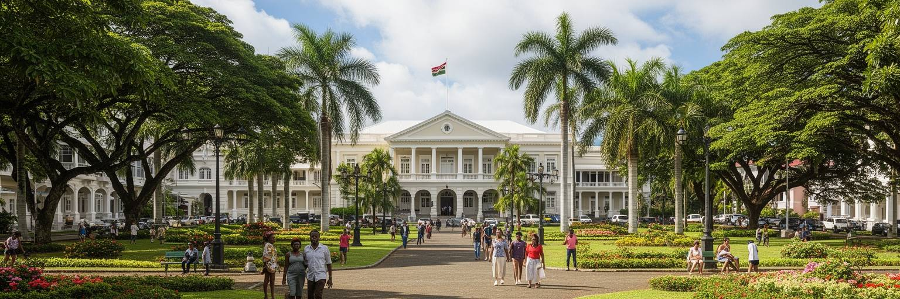
スバは、かつての首都レブカから行政機能が移されたことで近代的な首都として成長した。レブカは歴史ある港町だったが、山と海に挟まれて拡張が難しく、植民地政府はより広い湾岸と背後地を持つスバへ重心を移した。官庁街、図書館、庭園、学校、教会、港湾施設には、イギリス植民地期の都市計画と行政の記憶が残る。一方で、都市は植民地の展示物ではない。独立後のフィジーは、先住系の土地制度、インド系住民の歴史、軍政と民主化、太平洋地域の役割を抱えながら、スバを国家の舞台として使ってきた。古い建築は観光資源であると同時に、誰の歴史が記念され、誰の労働が見えにくくされたかを問う入口でもある。砂糖農園へ連れて来られたインド系契約労働者の子孫、先住共同体、ロツマや周辺島嶼の人々、移住者が都市を作り直してきた。スバを歩くと、植民地の線で引かれた街路に、多民族国家の現在が上書きされていることが分かる。独立の記憶は式典だけでなく、学校で学ぶ言語、家族の移住史、宗教施設の分布、公共空間での集会に残る。街の歴史を読むことは、白い建物を保存するだけではなく、そこに出入りできた人とできなかった人の差を考えることでもある。スバの過去は静かな背景ではなく、現在の政治と土地利用に影を落とす生きた記憶である。その記憶は、現在の市民参加や都市保存にもつながる。
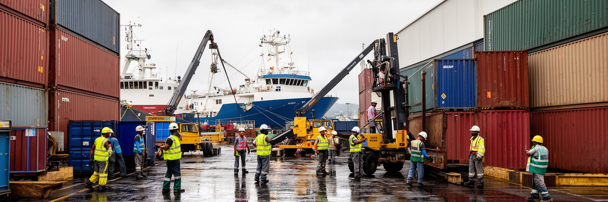
スバの経済を考える時、港湾の役割は欠かせない。フィジーは観光で知られるが、首都の日常は輸入品、国内流通、離島連絡、政府調達、学校や病院への物資、建設資材、食品、燃料の移動に強く依存する。港には船員、荷役、通関、倉庫、運転手、船舶修理、保険、金融、警備、清掃、食堂、事務職が連なり、都市の雇用を作る。近くの商店街や市場にも、港から来る商品と人の流れが染み込む。コンテナの遅れ、為替、燃料費、国際運賃、サイクロン、港湾施設の混雑は、スーパーの価格や工事の進み方に影響する。港湾労働は目立つ観光景観ではないが、島国の生活を支える基礎である。スバの港は、ビティレブ島内だけでなく、周辺の島々や太平洋地域とのつながりを保つ。離島へ送る建材、薬、学校用品、帰省客の荷物は、首都の岸壁を通じて動く。港を効率化することは商業政策であると同時に、離島の生活保障でもある。労働者にとっては、安定した賃金、安全装備、労使関係、技能訓練が都市生活の質を左右する。スバの港湾を読むには、船の大きさだけでなく、コンテナを降ろした後の道路、倉庫の温度、税関の手続き、雨の日の作業、夜勤の食事まで見る必要がある。港は世界経済を小さな首都の家計へ翻訳する場所であり、その翻訳が滞ると暮らしの不安が増す。港で働く手の安全は、島国の安心に直結している。
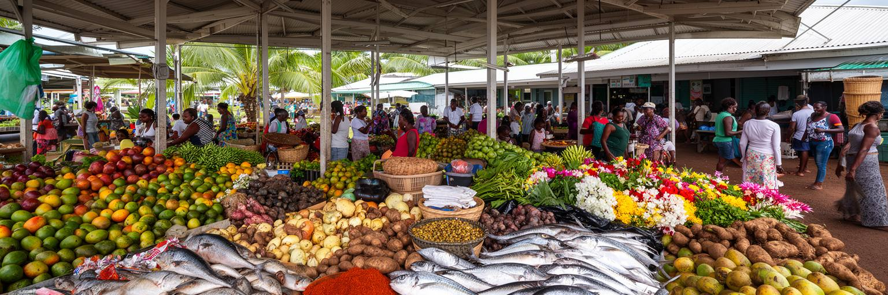
スバ市場は、首都の食と社会の構造を最も分かりやすく見せる場所である。タロ、キャッサバ、ダロ、ココナツ、魚、貝、野菜、果物、香辛料、花、カヴァの根、インド系の食材、屋台の料理が並び、ビティレブ島内の農村、沿岸の漁村、離島、輸入流通が一つの屋根の下で交わる。市場には先住系の売り手、インド系の商人、周辺島嶼出身者、学生、官庁職員、旅行者が集まり、英語、フィジー語、フィジー・ヒンディー語が混ざる。価格は天候、燃料費、輸入物価、収穫、港の物流に左右され、家計の緊張をすぐに映す。食文化は観光向けの演出だけではなく、移住と労働と宗教の歴史の結果である。カレー、ロボ料理、魚の煮込み、パン、菓子、茶、カヴァの時間は、家族の記憶と地域の関係を運ぶ。市場で働く人にとっては、早朝の仕入れ、雨、保冷、廃棄物、通路の狭さ、衛生、客との信用が日々の課題になる。スバを多民族都市として読むなら、祭りの舞台だけでなく、食材を選び、値段を交渉し、昼食を買う普通の時間を見る必要がある。食卓は、島国の自然、植民地期の移動、宗教上の食習慣、現代の物流を同時に映す。市場の整備は、露店の生活を壊さず、衛生と通路、排水、保存、公共交通を整えることで進むべきである。そこに首都の包容力が現れる。買い物の会話が、都市の信頼を毎朝作り直している。
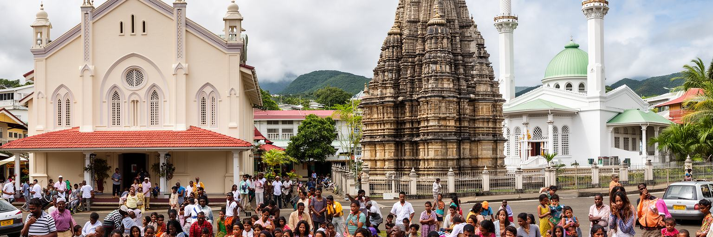
スバの社会を理解するには、宗教と言語の重なりを見る必要がある。メソジストをはじめとするキリスト教会、ヒンドゥー寺院、モスク、シク教の施設、家庭の祈り、地域の儀礼は、都市の暦と生活のリズムを作る。礼拝は信仰であると同時に、学校、葬儀、結婚、寄付、青年活動、音楽、スポーツ、福祉の場でもある。先住系フィジー人の共同体、インド系住民の家族史、ロツマや太平洋諸島出身者のネットワークは、教会や寺院を通じて都市の中に居場所を作る。英語は行政と教育の共通語だが、家庭や市場ではフィジー語、フィジー・ヒンディー語、地域の言語が使われ、言葉の選び方が親密さや距離を決める。宗教は時に政治や民族関係と結びつき、緊張を生むこともあるが、日常では相互扶助と信用の基盤にもなる。スバでは、ラグビーの応援、合唱、結婚式の食事、祭礼の行列、断食明けの食卓が、多民族都市の関係を具体的に作る。文化を美しい多様性としてだけ語ると、土地、政治、雇用、教育の格差が見えにくくなる。逆に対立だけで見れば、同じ職場や学校や市場で積み重なる共存の技術を見落とす。祈りと言葉は、都市の境界を作るだけでなく、境界を越えて助けを頼むための道具でもある。スバの公共性は、異なる祝日と礼拝時間が同じ街で調整されるところにある。違いを調整する日常が、首都の平穏を支える。
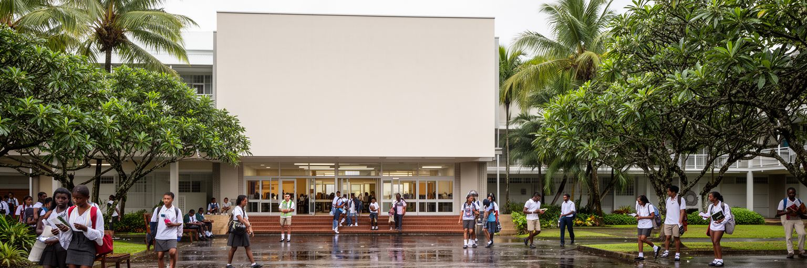
スバは教育と知識の都市でもある。南太平洋大学をはじめ、専門学校、研究機関、図書館、医療教育、地域機関の研修が集まり、フィジー国内だけでなく太平洋各地から学生、研究者、行政官、NGO職員が来る。小島嶼国では、すべての高等教育機能を各島に分散して持つことが難しいため、スバのような拠点都市が地域全体の人材育成を担う。キャンパスには気候変動、海洋法、開発、保健、教育、言語、農業、情報通信を学ぶ若者が集まり、卒業後は自国の行政、学校、企業、地域団体へ戻る。学生の存在は、賃貸住宅、食堂、バス、書店、印刷、通信、文化イベントにも影響する。教育拠点としてのスバは、単に大学がある都市ではなく、島々の未来を訓練する都市である。だが学費、生活費、奨学金、家族から離れる負担、言語の壁、デジタル環境の差は、学びへのアクセスを左右する。首都に教育機能が集中することは機会を作る一方で、地方や離島との格差も広げる。スバを読む時、港や官庁だけでなく、図書館で学ぶ学生、雨の中を通学する若者、地域会議で発表する研究者の姿を重ねる必要がある。教室で作られる知識は、サイクロン後の復旧、漁業管理、学校教育、医療人材、言語保存へつながる。南太平洋の都市としてのスバの力は、物資だけでなく人材と知識を循環させる点にある。若者の移動が、地域の結び目を強くする。
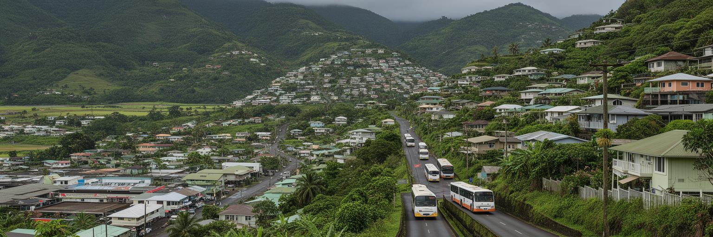
スバの市街地は、湾岸の低地から丘陵へ上がる地形に沿って広がる。中心部には官庁、港、商店、学校、バスターミナルが集まり、周辺には住宅地、非公式居住地、大学周辺の賃貸、丘の上の比較的余裕ある住まいが混在する。雨が多い都市では、坂道、排水、崖地、湿気、カビ、冠水、通学路の安全が暮らしを左右する。低地は仕事や交通に近いが、高潮や排水の問題を抱えやすく、丘の住宅は眺望と風を得る一方で通勤費と移動時間がかかる。家賃の上昇は若い世帯、学生、低所得労働者に重く、親族同居や間借り、周辺自治体への移動を促す。都市圏はスバ市域を越えてラミ、ナシヌ、ナウソリ方面へ伸び、通勤と買い物の実態は行政境界より広い。住宅問題は建物の不足だけでなく、土地権利、公共交通、排水、学校、医療、廃棄物、災害リスクが結びついた問題である。スバの丘を歩くと、同じ首都の中で海に近い便利さと、雨に弱い生活基盤が隣り合うことが分かる。都市計画の課題は、中心部を飾ることより、住民が安全な土地に住み、通勤と通学を続けられ、雨の日にも医療や市場へ行けるようにすることにある。坂道の排水溝、バス停の日よけ、歩道の連続性は小さく見えて、生活の公平性を決める。丘陵の首都では、地形そのものが社会の差を増幅する。地形を読むことが、支援の優先順位を決める。
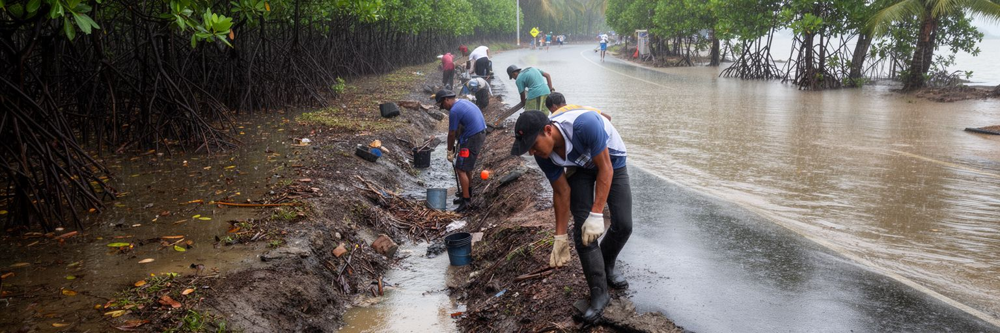
スバは気候変動を遠い未来の問題として扱えない都市である。海面上昇、高潮、強い雨、熱帯低気圧、斜面崩壊、排水不良、湿地の埋立、海岸侵食は、首都の道路、港、住宅、学校、病院、市場に影響する。フィジーは国際交渉で気候正義を訴える国として知られるが、その主張はスバの街路でも具体的な意味を持つ。低地の排水路が詰まれば市場やバスターミナルが混乱し、港の機能が止まれば輸入品と離島への補給に影響する。丘陵地の開発が進めば、雨水が速く流れ、下流の冠水を強めることもある。マングローブ、海岸緑地、雨水管理、建築基準、早期警戒、避難路、廃棄物対策は、景観や環境保護だけでなく都市の安全保障である。気候適応は大型インフラだけでは進まない。住民が水路をふさがない仕組み、学校での防災教育、地域の避難計画、低所得地区への支援、港湾施設の更新が必要になる。スバでは、国際会議で語られる一・五度の世界と、雨の日にバスへ乗れるかという日常がつながっている。太平洋の首都としての説得力は、自分の街でどれだけ公平な適応を進められるかにもかかっている。海辺の都市を守ることは、国の威信ではなく、働く人が翌日も市場や学校や港へ戻れる条件を守ることである。被害を受けやすい地区を守る視点がなければ、適応は不公平な再開発に変わる。支援も要る。
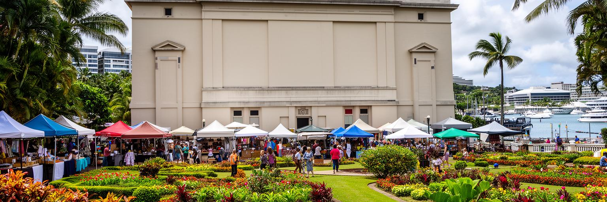
スバの観光は、白砂のビーチで完結するフィジー像とは少し違う。旅行者はフィジー博物館、サーストン庭園、アルバート公園、スバ市場、港、植民地期の建築、教会や寺院、近郊のコロ・イ・スバ森林公園へ向かう。ここで見えるのは、リゾートの南国ではなく、国家の歴史、多民族社会、太平洋の都市生活である。博物館では航海、考古、植民地、独立、儀礼、工芸の記憶が集まり、庭園や公園は市民の休息と式典の場になる。市場では食材と人の流れが分かり、港では島国の物流が見える。観光は住民の日常を消費するだけであってはならない。写真を撮る相手への配慮、宗教施設での敬意、地元の店やガイドへの支出、天候と交通への理解が必要である。スバの魅力は、壮大な名所の数ではなく、短い距離の中に国家、港、市場、庭園、大学、宗教、多民族の食が重なることにある。リゾート地から日帰りで訪れる場合でも、首都を歩くことでフィジーを単なる休暇の背景ではなく、政治と労働と歴史を持つ社会として理解できる。観光の質を高めるには、歩道、案内、博物館の保存、公共交通、清潔な市場、雨の日の動線を整えることが大切である。首都観光は、華やかな消費よりも、島国がどのように近代国家と地域拠点を作ってきたかを学ぶ深い旅になる。雨の街を歩く時間が、南太平洋の現実を近くする。
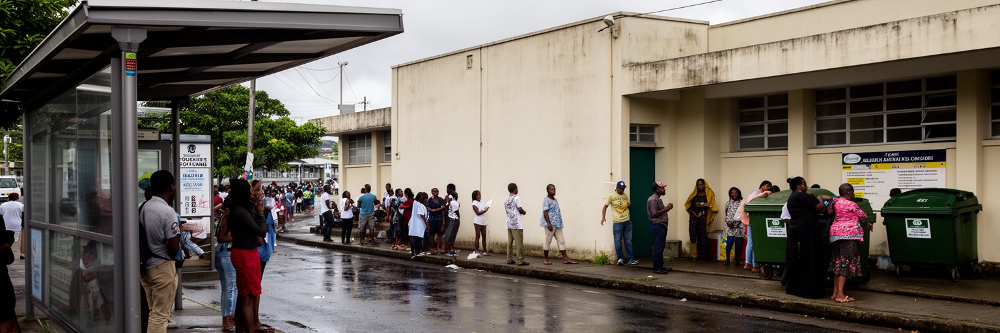
スバの暮らしには、安定した行政首都の顔と、急速に広がる都市圏の課題が同時にある。家賃、交通渋滞、若者の雇用、生活費、健康、廃棄物、排水、 informal settlement、ジェンダー安全、薬物問題、家庭内暴力、学校へのアクセスは、観光パンフレットには出にくいが都市の重要な現実である。南太平洋の中では公共サービスが比較的整う首都であっても、収入や居住地によって生活の選択肢は大きく変わる。バスを長く待つ人、雨の中で市場へ向かう人、病院の予約を取る人、学費を工面する家族、夜道を避ける女性、ゴミ収集の遅れに悩む地区は、首都の公共性を測る指標になる。都市の発展を港湾や会議施設だけで見ると、こうした日常の負担は見えなくなる。スバに必要なのは、華やかな再開発だけではなく、歩道、街灯、排水、公共交通、保健、住宅支援、青少年の居場所を積み重ねる政策である。多民族社会の共存も、公共空間が安全で使いやすい時に支えられる。学校帰りの子ども、高齢者、障害のある人、露店で働く人が同じ街路を無理なく使えるかどうかが、都市の成熟を示す。首都は国を代表する舞台である前に、住民の毎日が失われない場所でなければならない。雨の日の屋根、バス停の照明、診療所までの道のような小さな整備が、社会問題を和らげる現実的な入口になる。
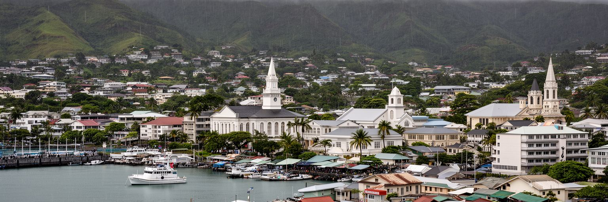
スバは、世界的な巨大都市ではない。しかし南太平洋を読む上では、非常に重要な都市である。港は島国の輸入と離島連絡を支え、官庁は国家の意思決定を担い、大学と地域機関は太平洋全体の人材と政策をつなぐ。市場には多民族社会の食と労働が現れ、教会、寺院、モスクは信仰と相互扶助の場になる。雨の多い丘陵と湾岸の低地は、住宅、排水、気候適応、交通の課題を日々可視化する。スバをリゾート地の周辺としてだけ見ると、この都市の重さを見誤る。ここには、植民地期の首都移転、独立後の政治、先住系とインド系の関係、地域外交、気候正義、都市化の圧力が重なっている。港で働く人、大学で学ぶ学生、市場で売る人、官庁へ通う公務員、バスで郊外から来る家族、宗教施設で歌う人が、首都の実像を作る。スバの魅力は、南国の美しさだけでなく、小さな湾岸都市が大きな海洋地域の制度と生活を引き受けている点にある。読むべきものは、港のクレーン、雨に濡れた坂道、庭園の記憶、会議室の文書、食卓の香辛料、礼拝の歌声、排水路の水である。それらを同じ地図に置くと、スバは太平洋の現在を凝縮した首都として見えてくる。大国の影響、気候の危機、移住、観光経済、日常の共存が、ここでは抽象論ではなく歩ける距離の出来事になる。小さな首都の観察が、広い海域の未来を考える入口になる。